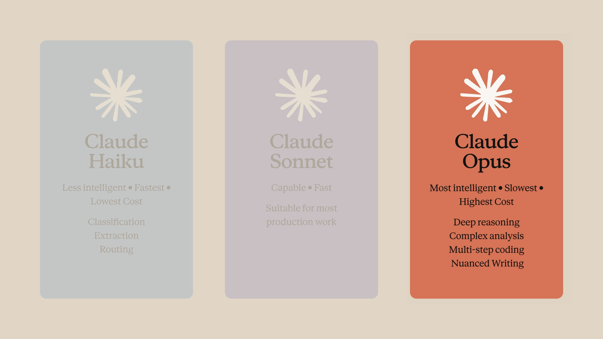
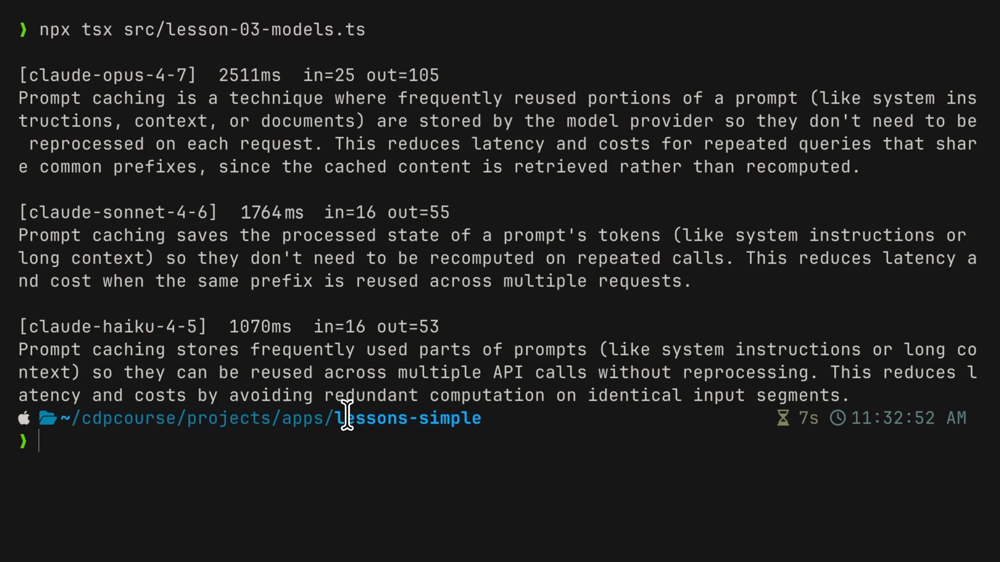

Как выбрать модель
Чему научитесь
Видео 3:07 и текст урока
К концу урока вы сможете:
- назвать четыре уровня моделей Claude — Fable, Opus, Sonnet и Haiku — и задачи, для которых подходит каждый;
- выбирать модель с помощью простой оценки: идти от Haiku вверх до самой дешёвой модели, чей результат можно выпускать;
- сравнивать модели по задержке и по токенам из
response.usage, по которым выставляется счёт; - направлять разные задачи одного приложения на разные модели.
Видео и текст урока.
Вы выпускаете приложение на Claude. Какую модель выбрать? Если по умолчанию брать самую умную, счёт за API вас неприятно удивит. Возьмёте самую дешёвую — и результат может подвести. У каждой модели свои плюсы и минусы, и от правильного выбора зависят и качество, и стоимость.
Уровни моделей
Сейчас Anthropic предлагает четыре уровня моделей; нужный вы выбираете параметром model в вызове API.
Учтите: Claude Fable 5.1 общедоступна с 1 сентября 2026 года, но в видео выше её нет, а на картинке с тремя карточками ниже показана линейка до выхода Fable 5.1. Подробнее о Claude Fable 5.1 и Claude Mythos 5.1 — здесь. Видео и скриншот терминала в этом уроке сделаны на более ранних моделях (Claude Opus 4.7 и Claude Sonnet 4.6). В коде ниже — текущие ID моделей; задержка и число токенов у вас будут другими.
- Claude Fable — наша самая мощная модель на сегодня: новый уровень выше Opus, созданный для самых трудных задач. Она дороже Opus, поэтому приберегите её для работы, где дополнительные возможности стоят этих денег. Текущая модель Fable — Claude Fable 5.1 (
claude-fable-5-1). - Claude Opus — самое мощное из трёх основных семейств моделей, но и самое медленное и дорогое из них. Берите его для глубоких рассуждений, сложного анализа, многошагового программирования и текстов, где важны нюансы. Текущая модель Opus — Claude Opus 5.5 (
claude-opus-5-5). - Claude Haiku — самая быстрая и дешёвая модель, оптимизированная под скорость и экономию, а не под максимальный интеллект. Берите её для большого объёма несложной работы: классификации, извлечения данных и маршрутизации. Текущая модель Haiku — Claude Haiku 4.5 (
claude-haiku-4-5). - Claude Sonnet — золотая середина: сбалансированное сочетание интеллекта, скорости и стоимости, которое хорошо подходит для большей части работы в продакшене. Текущая модель Sonnet — Claude Sonnet 5 (
claude-sonnet-5).

Начните с простой оценки
Прежде чем писать код для продакшена, подготовьте простую оценку (evaluation): набор примеров входных данных; вы прогоняете их через каждую модель и сверяете результат с тем, что считается хорошим ответом в вашей задаче. Ничего сложного не нужно — для начала хватит 20–30 показательных примеров из реальных задач вашего приложения.
Затем поднимайтесь по уровням:
- Сначала прогоните примеры через Haiku. Если качество устраивает — готово, и вы только что сэкономили немало денег.
- Если нет — переходите на Sonnet.
- За Opus беритесь, только когда задача этого требует.
Сравниваем уровни напрямую
Давайте не просто поговорим о разнице между уровнями, а посмотрим на неё. Отправим один и тот же промпт всем трём моделям и проследим за задержкой и числом токенов:
models = ["claude-haiku-4-5", "claude-sonnet-5", "claude-opus-5-5"]
for model in models:
response = client.messages.create(
model=model,
max_tokens=300,
messages=[{"role": "user", "content": prompt}],
)
print(model, response.usage)
Здесь стоит отметить две вещи:
- Цикл в каждом запросе меняет значение поля
model. Промпт тот же,max_tokensтот же — меняется только модель. response.usageвозвращает число входных и выходных токенов прямо из API — именно по ним рассчитывается ваш счёт.

Запустите — и увидите три модели и три набора чисел. Opus отвечает дольше всех, и текст у него самый отточенный, но для определения в два предложения эта отточенность пропадает зря. Sonnet пишет немного сжатее. А Haiku часто меньше чем за секунду выдаёт очень толковый ответ в два предложения. Для такого сценария он, честно говоря, идеален.
В этом и весь смысл: правильная модель — самая дешёвая из тех, чей результат вы действительно готовы выпустить. Для определения вполне хватает Haiku. Для черновика ответа на запрос регулятора вы провели бы то же сравнение и, скорее всего, остановились бы на Opus. Оценка каждый раз устроена одинаково.
Разные задачи — разным моделям
В реальном приложении разные виды работы направляют на разные модели внутри одного и того же эндпоинта. Возьмём операционный дашборд с маршрутом для обработки документов:
- каждый входящий файл классифицирует Haiku;
- черновики сообщений клиентам пишет Sonnet;
- и только ответы на RFP (запросы коммерческих предложений) достаются Opus.
Одна очередь, три модели, и для каждой задачи — своя.
Итог
- Anthropic предлагает четыре уровня моделей: Fable — когда нужен максимум возможностей, Opus — для трудных задач, Sonnet — для повседневной работы и Haiku — для больших объёмов.
- Прежде чем писать код для продакшена, подготовьте простую оценку — 20–30 показательных примеров из ваших реальных задач.
- Прогоняйте оценку от Haiku вверх и останавливайтесь на самой дешёвой модели, чей результат вы действительно готовы выпустить.
response.usageсообщает число входных и выходных токенов — по ним и рассчитывается ваш счёт.- В продакшене направляйте разные задачи на разные модели внутри одного эндпоинта, а не берите одну модель для всего.
Дальше
Следующий урок — «Как устроен цикл агента»: один вызов API возвращает один ответ, а агенту нужно действовать, смотреть на результат и решать, что делать дальше. Разберём, как он работает.
Оригинал урока: Choosing the right model.